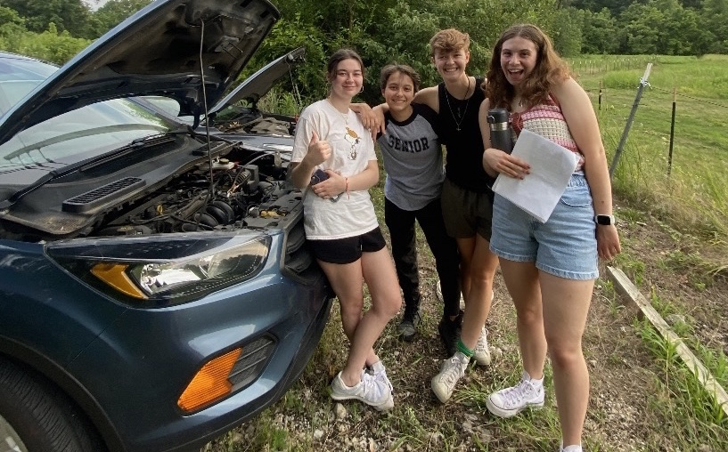

Meet Our Cast and Crew
Get to know the talented individuals who make these short films possible. Each person on this list has brought their unique skills and passions to each of these projects, and has made a significant impact on the outcome of the film. These people are some of my closest friends, and I am so grateful to have gotten to work with them on these projects.
